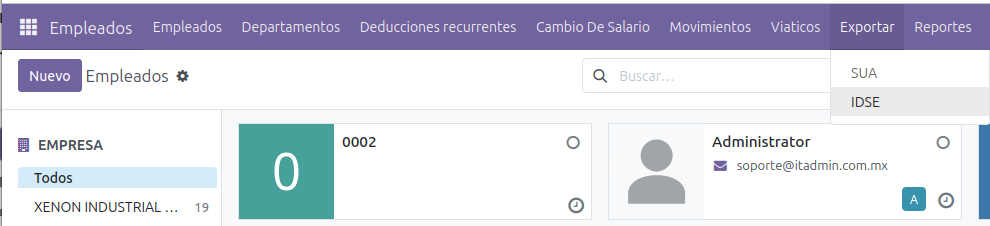
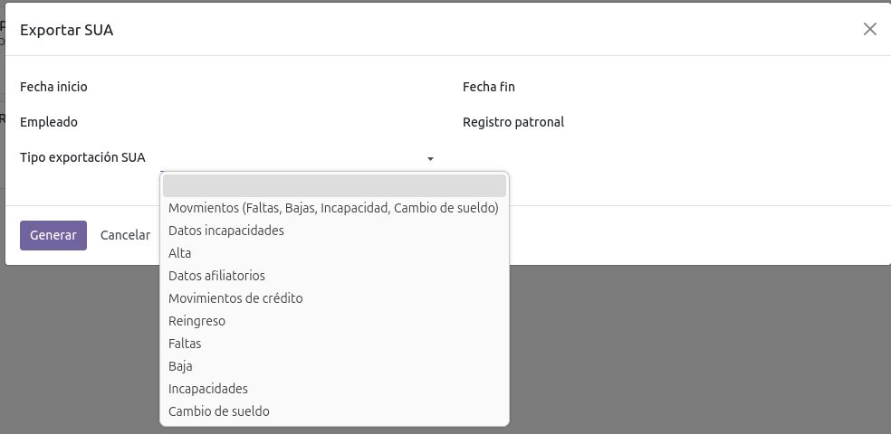
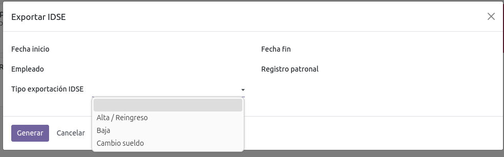
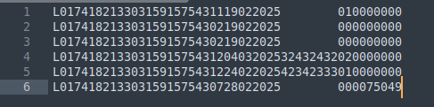

Nomina Exportación SUA e IDSE
En el Módulo de Empleados → Exportar, está el menú donde se pueden descargar los archivos generados del módulo.

Para ambas opciones de descarga se puede filtrar por fecha de inicio / fin, empleado y registro patronal


Cada uno de los dos sistema, SUA e IDSE tienen distintos tipos de exportación.
La información para dichas descargas las toma de los registros hechos dentro de Movimientos –
Incidencias o registros de tiempo personal, según sea el caso.
Al momento de dar clic en generar se descarga un archivo de texto con la información solicitada en
un formato para importar a cada uno de los sistemas.

Este manual es una guía básica de las funcionalidades estándar del módulo. Para recibir asesoría
sobre sus dudas adicionales o una capacitación detallada, puede contratar consultoría.